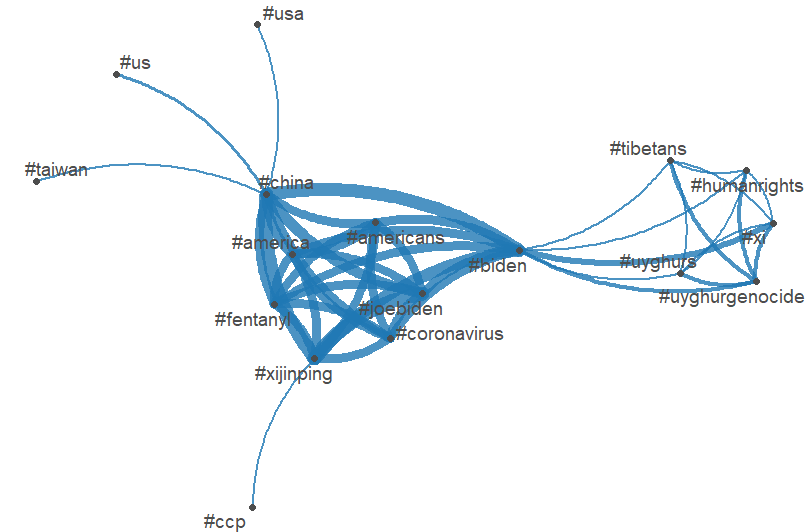
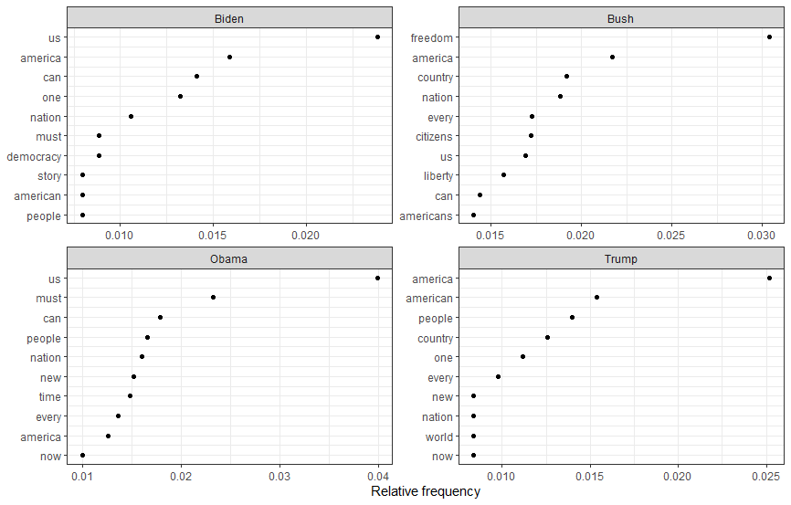
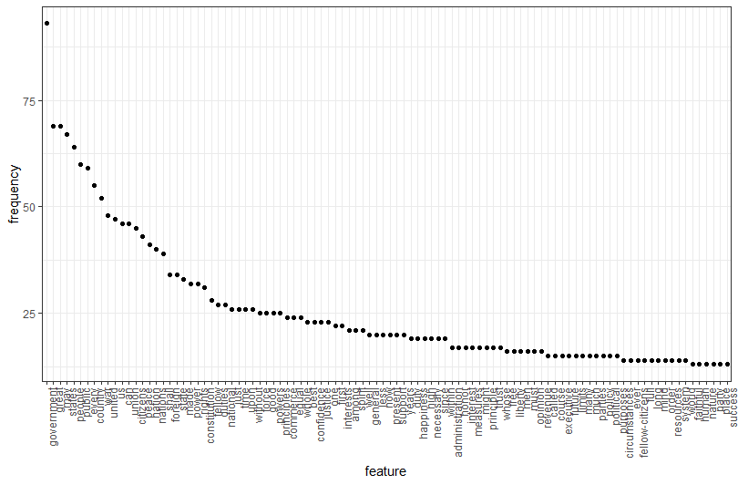

--- title: “Assignment 2” ---
This wordcloud indicated the strong determination of Churchill’s to have the war and fight with Hilter regardless how much willingness that France and French people would have join with the British for this war. --- title: “Assignment 4” ---
What is wordfish:
Wordfish is a Poisson scaling model of one-dimensional document positions (Slapin and Proksch 2008). Wordfish also allows for scaling documents, but compared to Wordscores reference scores/texts are not required. Wordfish is an unsupervised one-dimensional text scaling method, meaning that it estimates the positions of documents solely based on the observed word frequencies. more information can be found: Wordfish :: Tutorials for quanteda
The plots based on Biden-xi summit data indicates that the relationship between China and Taiwan were the issue that discussed by both Xi Jingpi and Biden. President Biden also raised his concern with human rights issues in China, especially in Tiben and Uyghurs(xinjiang) areas.

When looking at the plot, we can see that each of the recent presidents has their own emphasis and priority regarding the economic and social situations of the country at their era.

Although they have difference commitment and national strategies which have shown through their speeches, we still can find out from their speech which words they mentioned most. “Government” are the highest frequency word which indicates government and national as a whole is the most important element of the United States.

--- title: “Assignment 5” ---
At the Data Analytics Colloquium on Nov17, 2022, Dr. Patrick Brandt reviewed how data-drive techniques for the statistical detection and identification of data changes over time and provide a taxonomy for how to diagnose and think about these methods. He listed several change-point models, including basic time series intervention model, Binary segmentation model, L1/L0 regularization & lasso model, and Bayesian methods.
As the time series models are beyond my knowledge base at this moment, I will give a detailed review in near future. At lest, the important point is that all those model choices are depending on the siutations including time and computational costs.